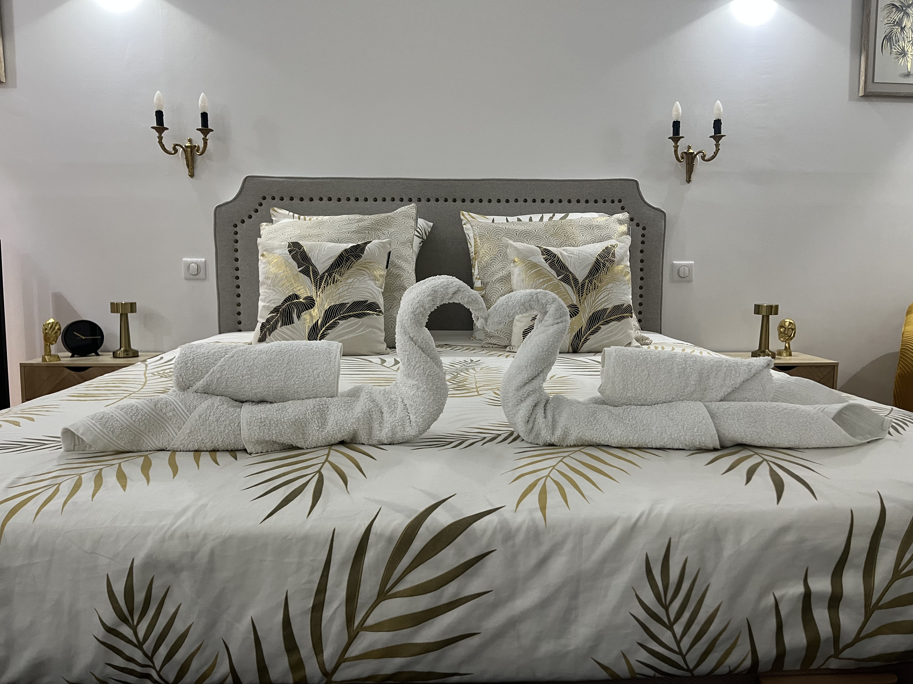
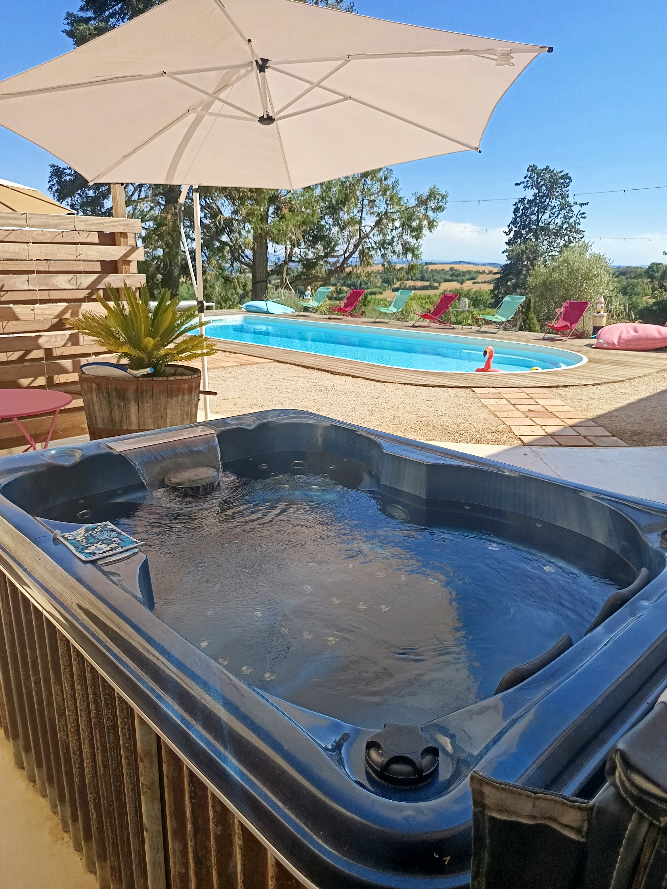

L'expérience La Chambre de Marin

Un horizon infini
Depuis les hauteurs de Lombers, la campagne du Tarn s'étend à perte de vue. Un spectacle de collines dorées et de ciel immense qui se renouvelle à chaque heure.

Votre piscine privée
Baignée de lumière du Sud, notre piscine est un espace de liberté absolue. Plongez, flânez, savourez — personne d'autre que vous deux.

Spa privatif & bougies
Un rituel de bien-être taillé pour les amoureux. Laissez la chaleur du spa envelopper votre soirée, entre bougies scintillantes et sérénité totale.

Campagne préservée
Ici, le silence est un luxe. Chant des cigales, parfum de la garrigue, lumière rasante du soir — la nature s'offre à vous dans sa version la plus apaisante.
Les trésors du Tarn
Le Tarn regorge de merveilles à portée de volant. En quelques minutes, trois cités d'exception s'offrent à vous.

Classée au patrimoine mondial de l'UNESCO. Albi séduit par sa cathédrale Sainte-Cécile en briques roses et son musée Toulouse-Lautrec. Flânez dans les ruelles médiévales longeant le Tarn.

Perché sur son éperon rocheux, Lautrec figure parmi "Les Plus Beaux Villages de France". Ses ruelles fleuries, son moulin à vent et son marché à l'ail violet en font une escale incontournable.

Surgissant de la brume matinale comme un mirage, Cordes-sur-Ciel est l'une des bastides médiévales les mieux conservées de France. Galeries d'artistes, demeures gothiques et vue vertigineuse garantis.